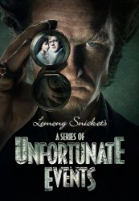

")
Alternativ: A Series of Unfortunate Events
 
 IMDB-Wertung: 7.9 / 10
IMDB-Wertung: 7.9 / 10  Metascore:
Metascore: 
Basierend auf der US-amerikanischen Kinderbuchreihe von Daniel Handler alias „Lemony Snicket“ dreht sich die Serie um die drei Geschwisterwaisen Violet, Klaus und Sunny Baudelaire, die ihre Eltern durch einen Brand verloren haben. Da sie nicht volljährig sind, werden die Drei von wechselnden Vormunden großgezogen, die jedoch nacheinander alle dem ersten Vormund zum Opfer fallen – dem bösen Grafen Olaf. Olaf will sich das Familienvermögen unter den Nagel reißen und schreckt dabei auch vor grausamen Maßnahmen nicht zurück.Mit fortschreitender Handlung entdecken Violet, Klaus und Sunny, dass ihre Eltern und einige ihrer Vormunde diverse Geheimnisse hatten und einer geheimen Organisation angehörten. Gemeinsam versuchen sie, Licht in diese unbekannte Vergangenheit zu bringen und endlich einen Ort zu finden, an dem sie sicher leben können.
Jahr: 2017
Dauer: 47 Minuten
FSK:
Land: USA Studio: NetflixTonspuren:
Untertitel:
Auflösung: 720p (1280x640) Größe: 128000 MB
Genre: Drama, Abenteuer, Familie, TV-Serie
Regisseur:  Barry Sonnenfeld, Mark Palansky, Bo Welch
Barry Sonnenfeld, Mark Palansky, Bo Welch
Drehbuch: James Bowen
Soundtrack:
Darsteller:
 Neil Patrick Harris als Count Olaf
Neil Patrick Harris als Count Olaf Patrick Warburton als Lemony Snicket
Patrick Warburton als Lemony Snicket K. Todd Freeman als Mr. Poe
K. Todd Freeman als Mr. Poe Will Arnett als Father
Will Arnett als Father Cobie Smulders als Mother
Cobie Smulders als Mother Tara Strong als Sunny Baudelaire
Tara Strong als Sunny Baudelaire Matty Cardarople als Henchperson of Indeterminate Gender
Matty Cardarople als Henchperson of Indeterminate Gender John DeSantis als Bald Man
John DeSantis als Bald Man Cleo King als Eleanora Poe
Cleo King als Eleanora Poe Don Johnson als Sir
Don Johnson als Sir Alfre Woodard als Aunt Josephine
Alfre Woodard als Aunt Josephine Joan Cusack als Justice Strauss
Joan Cusack als Justice Strauss Aasif Mandvi als Uncle Monty
Aasif Mandvi als Uncle Monty Catherine O'Hara als Dr. Georgina Orwell
Catherine O'Hara als Dr. Georgina Orwell Rhys Darby als Charles
Rhys Darby als Charles Patrick Breen als Larry
Patrick Breen als Larry Timothy Webber als Jimmy
Timothy Webber als Jimmy Chris Gauthier als Phil
Chris Gauthier als Phil Rob LaBelle als Taxi Driver
Rob LaBelle als Taxi Driver Loretta Walsh als Norma Rae
Loretta Walsh als Norma Rae Keith Dallas als Truck Driver
Keith Dallas als Truck Driver Mary Black als Sweet Old Lady
Mary Black als Sweet Old Lady John Stewart als Zombie Snowman
John Stewart als Zombie Snowman Elizabeth Bowen als Dill Salesperson
Elizabeth Bowen als Dill Salesperson Mark Brandon als Veronica
Mark Brandon als Veronica Matthew Walker als Ticket Seller
Matthew Walker als Ticket SellerDatei: X:\HD-Serien\Reihe betrüblicher Ereignisse S01\Reihe betrüblicher Ereignisse S01E01.mkv seit 18.01.2017
Festplatte: HD Serien(I-ST)
 Es gibt insgesamt 182 Filme in der Gruppe 'HD-Serien'
Es gibt insgesamt 182 Filme in der Gruppe 'HD-Serien'